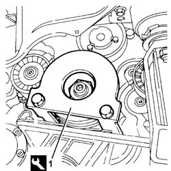
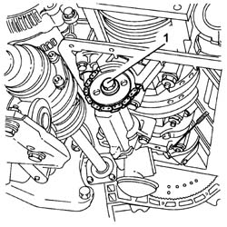
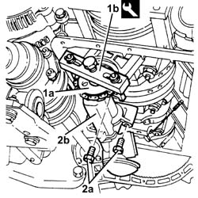
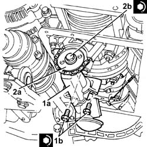

1084B12 ENGINE OIL PUMP - R+R
- Path
- Procedures > 10 ENGINE UNIT > 1084 ENGINE LUBRICATION SYSTEM > 1084B ENGINE OIL LUBRICATION CIRCUIT > 1084B12 ENGINE OIL PUMP - R+R
- Kind
- repair procedure (removal / refitting; the operation number is the code)
- Applies to
- engines: 3.2 V6; all production periods
- Interactive page
- https://sloeber94.github.io/elrnDB-aGt/en/#/125001155
Applies to: engines: 3.2 V6; all production periods
 Removing
Removing
 Refitting
RefittingPosition the vehicle on a lift.
Make sure that the ignition key is in the OFF position, then disconnect the negative battery terminal (-)
Description | Connector | |
|---|---|---|
- | Battery | See A1B BATTERY ( BATTERY NEGATIVE ) |
Proceed with the removal
Op. 4450B04 RIGHT FRONT WHEEL R R.
Proceed with the removal
Op. 7055B64 LH OR RH REFLECTOR(ONE) ON REAR BUMPERS - R R.
Proceed with the removal
Op. 1092G10 SINGLE ENGINE BELT R R.
Proceed with the removal
Op. 7055B54 UNDER-ENGINE GUARD - R R.
Proceed with the removal
Op. 1076B82 LEFT EXHASUST PIPE BETWEEN CATALYTIC PRECONVERTER AND CONVERTER R R.
Proceed with the removal
Op. 5510C34 RPM AND TIMING SENSOR (SINGLE) - R+R.
Proceed with the removal
Op. 1020A20 CRANK CASE OIL SUMP - R + R CLEAN SEALS FOR SEALANT APPLICATION.
1. Fit the crankshaft pulley counter-torque tool.
Description | Code | |
|---|---|---|
1 | Counter-torque for crankshaft | 1.870.646.000 |

Applies to: engines: 3.2 V6; all production periods
1. Undo the bolt fixing the drive chain to the engine oil pump.

Applies to: engines: 3.2 V6; all production periods
1. Release the drive chain (1a) from the engine oil pump using the tool (1b).
Description | Code | |
|---|---|---|
1b | Extractor | 1.860.954.001 |
2. Undo the bolts (2a) and remove the engine oil pump (2b).

Applies to: engines: 3.2 V6; all production periods
Refitting
Removing1. Position the engine oil pump (1a) in its housing and secure it tightening the bolt (1b) to the recommended torque.
Fastening | Component | Ø | Value (daNm) | |
|---|---|---|---|---|
1b | Bolt | ENGINE OIL PUMP | M10 | (Main bearing caps side) 4.5 - 5.5 |
2. Place the drive chain (2a) on the engine oil pump and secure it tightening the bolt (2b) to the recommended torque.
Fastening | Component | Ø | Value (daNm) | |
|---|---|---|---|---|
2b | Bolt | ENGINE OIL PUMP DRIVE CHAIN | M10 | (Engine oil pump side) 4.5 - 5.5 |

Applies to: engines: 3.2 V6; all production periods
Remove the crankshaft pulley counter-torque tool.
Description | Code | |
|---|---|---|
- | Counter-torque for crankshaft | 1.870.646.000 |
Proceed with the refitting
Op. 1020A20 CRANK CASE OIL SUMP - R + R CLEAN SEALS FOR SEALANT APPLICATION.
Proceed with the refitting
Op. 5510C34 RPM AND TIMING SENSOR (SINGLE) - R+R.
Proceed with the refitting
Op. 1076B82 LEFT EXHASUST PIPE BETWEEN CATALYTIC PRECONVERTER AND CONVERTER R R.
Proceed with the refitting
Op. 1092G10 SINGLE ENGINE BELT R R.
Proceed with the refitting
Op. 7055B64 LH OR RH REFLECTOR(ONE) ON REAR BUMPERS - R R.
Proceed with the refitting
Op. 4450B04 RIGHT FRONT WHEEL R R.
Refill the engine oil lubrication system
Op. 0010T11 ENGINE OIL CHECK LEVEL AND TOP UP.
Proceed with the refitting
Op. 7055B54 UNDER-ENGINE GUARD - R R.
Connect the negative battery terminal (-).
Remove the vehicle from the lift.
Topics linked from this page (8)
- 0010T11 ENGINE OIL CHECK LEVEL AND TOP UP
- 1020A20 CRANK CASE OIL SUMP - R + R CLEAN SEALS FOR SEALANT APPLICATION
- 1076B82 LEFT EXHASUST PIPE BETWEEN CATALYTIC PRECONVERTER AND CONVERTER R R
- 1092G10 SINGLE ENGINE BELT R R
- 4450B04 RIGHT FRONT WHEEL R R
- 5510C34 RPM AND TIMING SENSOR (SINGLE) - R+R
- 7055B54 UNDER-ENGINE GUARD - R R
- 7055B64 LH OR RH REFLECTOR(ONE) ON REAR BUMPERS - R R